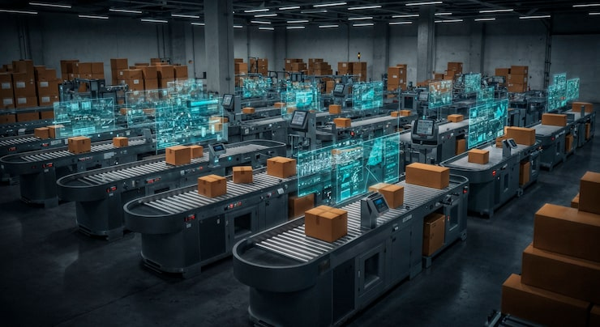

End-to-end operational transformation designed to eliminate drag and permanently accelerate execution.
For organizations outgrowing their legacy systems. We build scalable, resilient cloud architectures capable of handling real-world operational demand.
Transition from on-prem to secure, highly-available cloud environments (AWS/Azure) without operational downtime.
Unify fragmented databases into centralized, real-time data lakes to serve as the single source of truth.
For high-volume operations trapped by manual workarounds. We deploy intelligent automation to reclaim thousands of hours.
Automate repetitive administrative tasks: document extraction, invoice processing, and manifest reconciliation.
Trigger instant system actions across the warehouse floor based on real-time operational events.

For operations suffering from fragmented tech stacks. We connect disconnected WMS, TMS, and ERP systems into one cohesive operational engine.
Bridge the gap between outdated proprietary software and modern SaaS platforms using custom middleware.
Ensure inventory, orders, and fulfillment statuses are perfectly mirrored across all your platforms simultaneously.

We specialize in solving complex operational friction. Let's discuss your unique technical roadblocks.
Talk to an Engineer